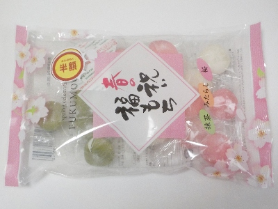
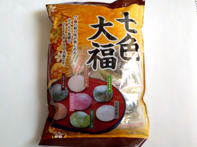

伊藤製菓の春の祝い福もち
2024/04/29

桜、みたらし、抹茶の3種類の大福が入っています。
赤白緑でひな祭りっぽいカラーですね。
大福ですが中にはあんこが入っていません。桜ゼリー、みたらし、抹茶クリームです。三色とも味が濃くって満足感が高かったです。
おなかが空いたときにつまんで食べるのに丁度いいです。
長野県下伊那郡喬木村阿島400-96
2024/04/29

桜、みたらし、抹茶の3種類の大福が入っています。
赤白緑でひな祭りっぽいカラーですね。
大福ですが中にはあんこが入っていません。桜ゼリー、みたらし、抹茶クリームです。三色とも味が濃くって満足感が高かったです。
おなかが空いたときにつまんで食べるのに丁度いいです。
2022/12/10

一袋に、よもぎ大福、白大福、みたらしだんご餅、桜風味大福、抹茶クリーム大福、あずき草餅、黒蜜きなき餅の7種類の大福が2個とか3個ずつ入ってました。
どの味にしようかと選んで食べるのは楽しいです。
それぞれ個性的な大福ですが、私はこの中ではあずき草餅が一番好きかな。